part a
1.1Constructing noisy training inputs
Training inputs are just a mix of noise and the clean image. At t = 0.25 you can barely make out the scene, and by 0.75 it is mostly clean. The same noise is used for all three so the only thing changing is how much of the image is left.
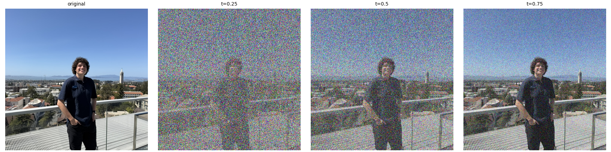
1.2Classical denoising
You can use Gaussian blur to remove noise, but it has no idea what the image is supposed to look like. It can only smooth things out, so the noise and the detail go away together. The noisier the input, the more blur it needs, but the best result is a smudge.
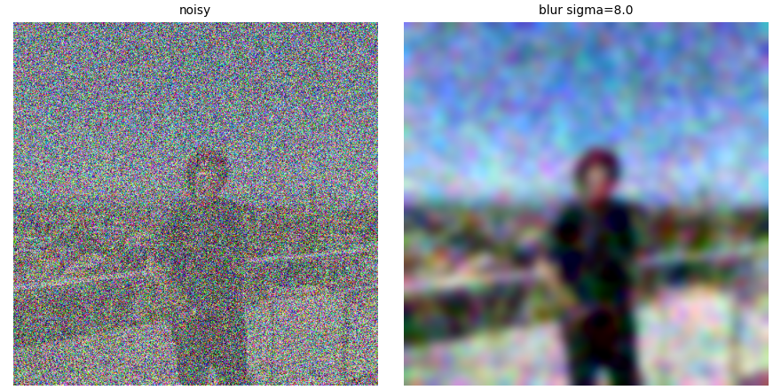
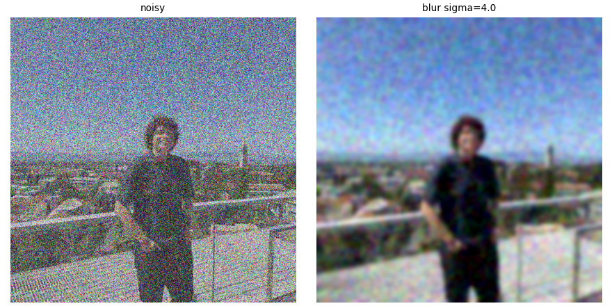
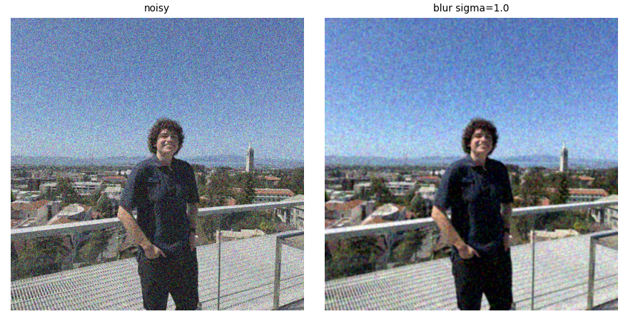
1.3One-step denoising
The one step estimate is already much better than blurring, because the model has learned what real images look like. At t = 0.75 it is very close to the original. At t = 0.25 it has to guess most of the image at once, so it comes out blurry and loses the fine detail.
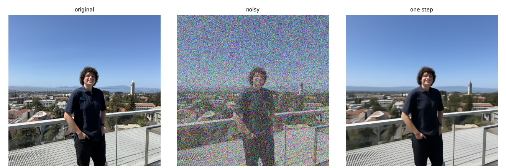
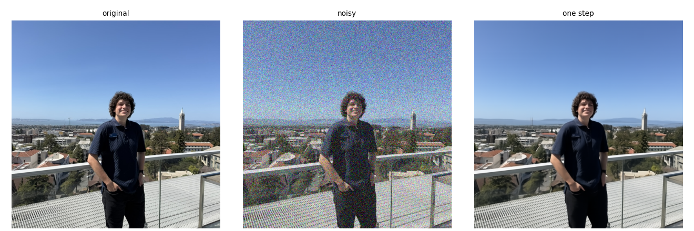
1.4Visualizing velocity
The predicted update and the true update look very similar overall, the model gets the layout and colors right. The error is mostly around edges and fine details like my face and the railing, and it gets worse as t gets smaller and there is less of the image left to go off of.
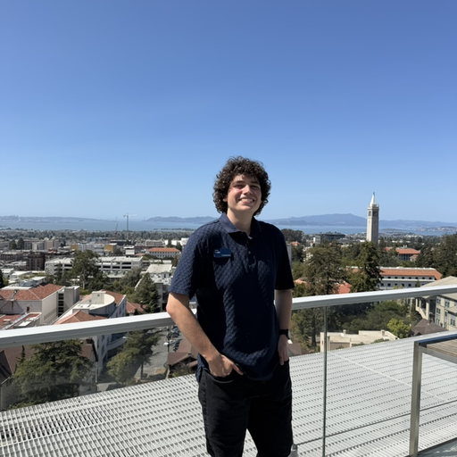
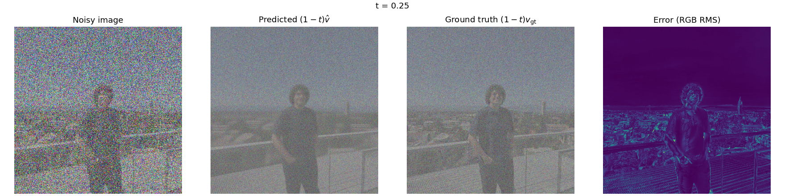
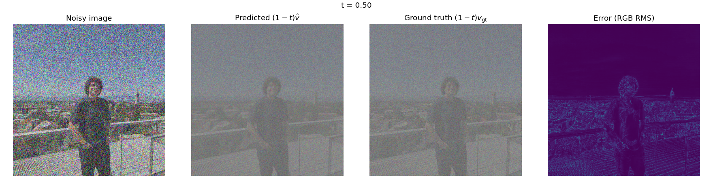
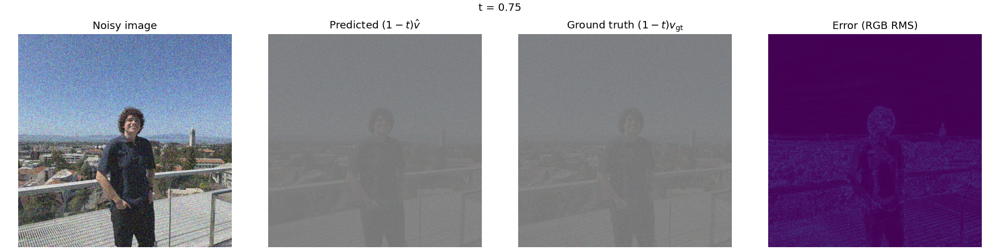
1.5Iterative denoising with Euler sampling
Taking a lot of small steps instead of one big one gives a much sharper result, and out of blur, one step and Euler on the same input, Euler looks the most like a real photo. Interestingly, it does not have the lowest error. The MSE to my original was 0.035 for blur, 0.010 for one step and 0.012 for Euler. One step is a little blurry, and blurry guesses score well on MSE because they hedge between possibilities. Euler commits to sharp details, and since the model has never seen my exact picture, some of those details are not the real ones.
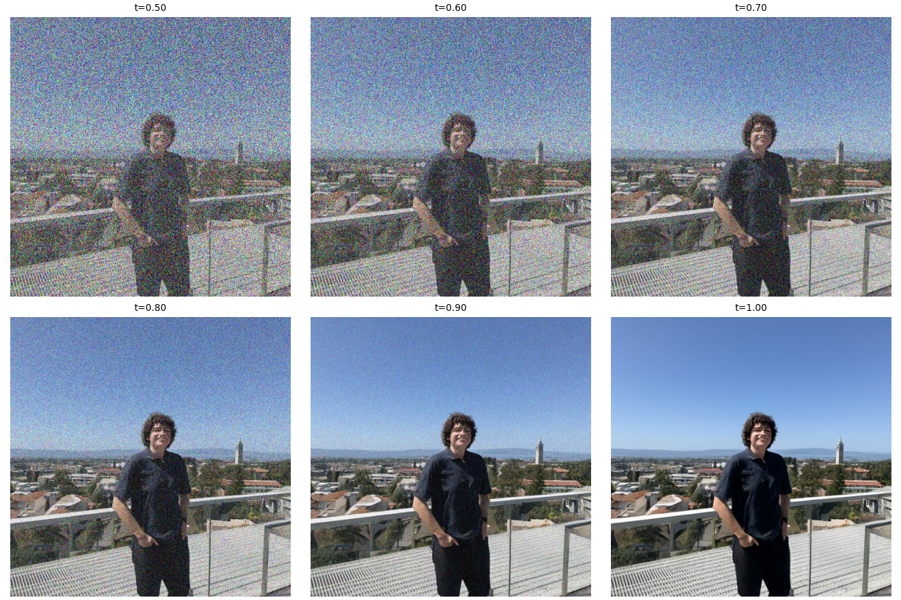
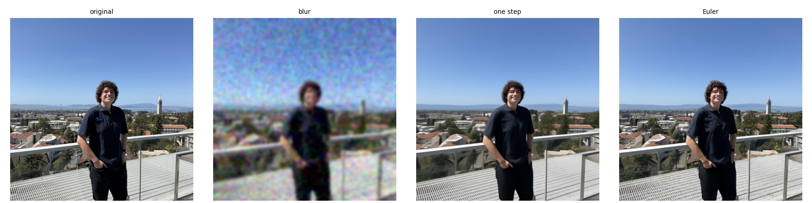
| method (t = 0.5 input) | MSE to original |
|---|---|
| blur | 0.0349 |
| one_step | 0.0103 |
| euler | 0.0123 |
1.6Generating images from noise
All five samples came out as photos of people, which says a lot about what this model thinks a high quality photo is. Without guidance they are pretty rough, a couple of the faces are missing or distorted, like seed 180 where the person has no face.

2.1Classifier-free guidance
With CFG at w = 7, every sample is a clean, front facing portrait with no distortions, but we lose variety and they all look like the same kind of stock photo. You can still see the starting noise in some of them, seed 182 has a hand on the cheek in both versions.

3.1Image-to-image editing
Starting earlier gives the model more freedom, and starting later keeps more of the original. I think the interesting part is what the model holds on to. At t = 0.02 it only keeps the rough colors and shapes, so it kind of makes up something that fits them. My black cat turns into a black phone in someone's hand, and Oski turns into a woman's face. From 0.04 to 0.14 it's the right scene, but a generic version of it. The Campanile is a plain white obelisk, and I get swapped out for a different guy in a black t-shirt. The real details, like the Campanile's windows and the tower behind me, only come back around 0.25, and by 0.5 it's pretty much the original.
I tried a few drawings and was struggling to get good results. I think it was interesting how the lines got wiped out, even though I tried to draw them pretty bold. A pencil line is thin, so the noise wipes it out first, and from 0.04 to 0.14 the model just turns what's left into blank paper. At 0.25 and up the lines survive, but a photo of a sketch already counts as a high quality photo, so it just stays a sketch. I think a drawing with big filled in shapes would have worked a lot better.
campanile + my pics

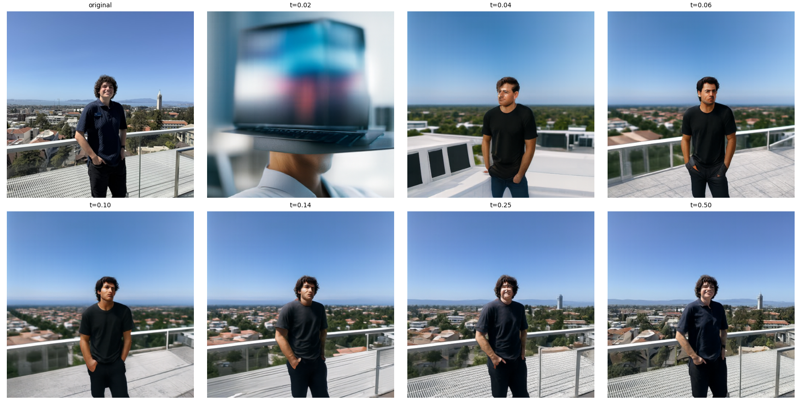
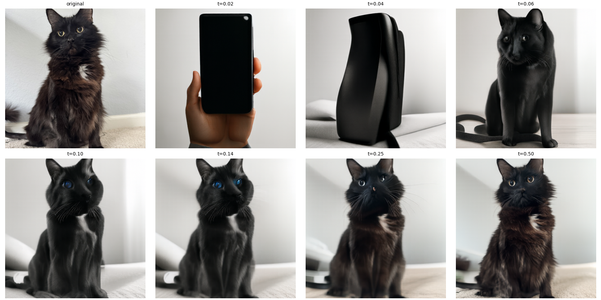
web pic + drawings
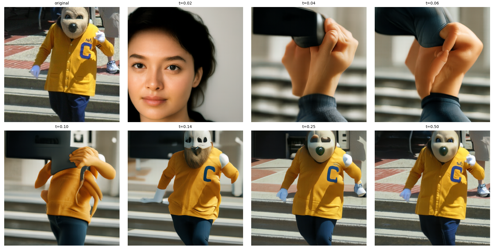
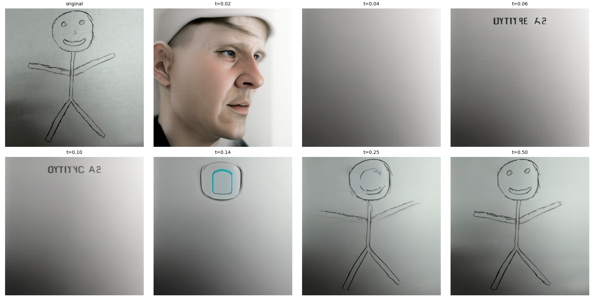
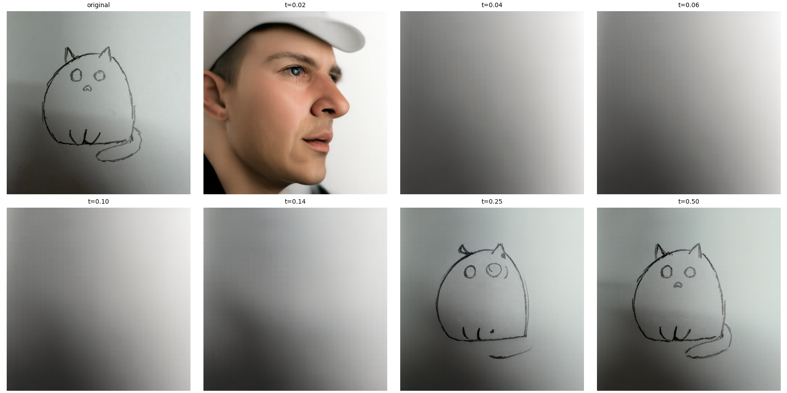
3.2Text-guided image editing
For the Campanile I asked for "a menacing obelisk under a blue and yellow sky". I think this kind of did accomplish what I was looking for in a pretty comedic way, especially at t = 0.06 and t = 0.10, where it grows an evil face at the top. It was exactly what I was looking for. Then it quickly devolves back into the original image once we start from a later step.
For my picture I asked for "an empty balcony overlooking a city". I wanted to test if this model was able to remove me from an image, and to a certain extent it did. At t = 0.02 it did generate a new balcony with no human in it. The only problem is that it started at such a high noise level that it really didn't maintain much of the original image, so it's now kind of Roman style instead of UC Berkeley. I think that if I was masked out and then used the model to inpaint, it would have worked quite well. But unfortunately, that's not the test.
I do think swapping the color of my cat with "an orange cat" worked fairly well. At t = 0.04 and t = 0.06 it still keeps a few of the recognizable structures from my cat. It's definitely not perfect. I think these models struggle with image editing.
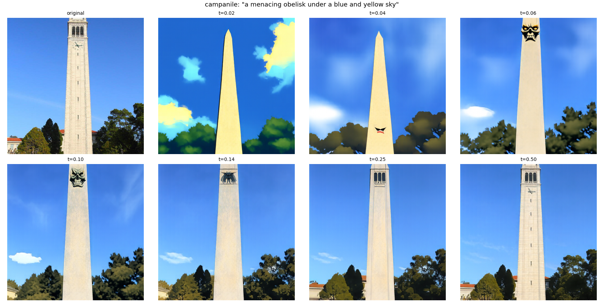
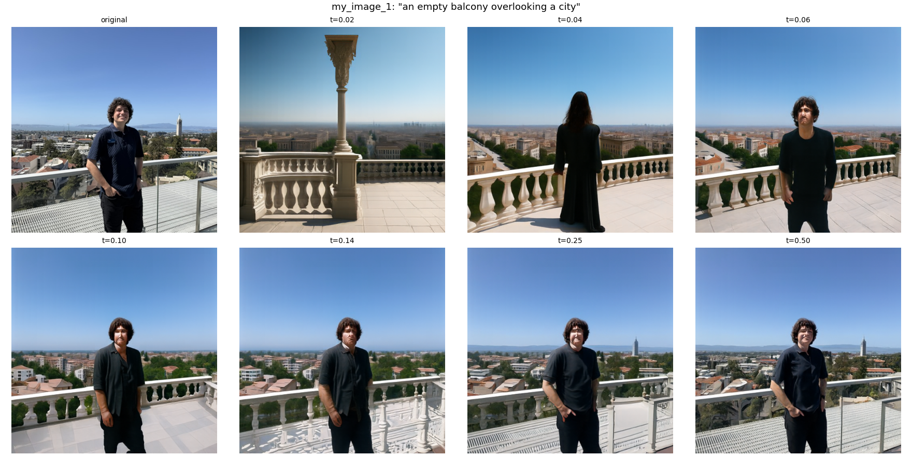
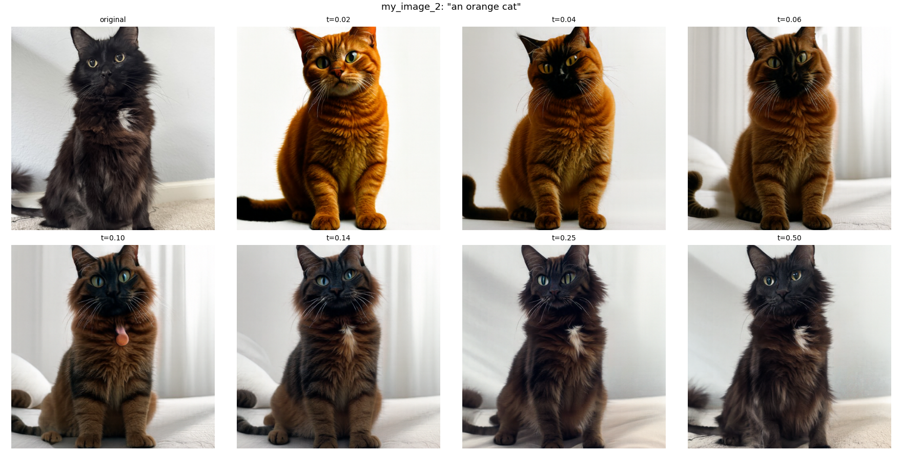
3.3Visual anagrams
The image gets pulled toward both prompts at once, one right side up and one upside down. This took some iteration. My first tries at night or in a dark room came out almost completely black. Both views share the same pixels, so the two prompts need to share the same colors and lighting. Once I switched to daylight versions, things started to work. I think the robot / old man pair turned out the best. The robot's head becomes the old man's beard and mouth, and both views read really well. The man in a green field and the man at a desk in a green room also works, the white clouds flip into the papers on the desk. The desk view is a little weaker though, you can see the upside down face of the man in the field sitting on the desk. I also kept the two example pairs from the spec, and the campfire one has the same problem, there's an upside down face in the fire.
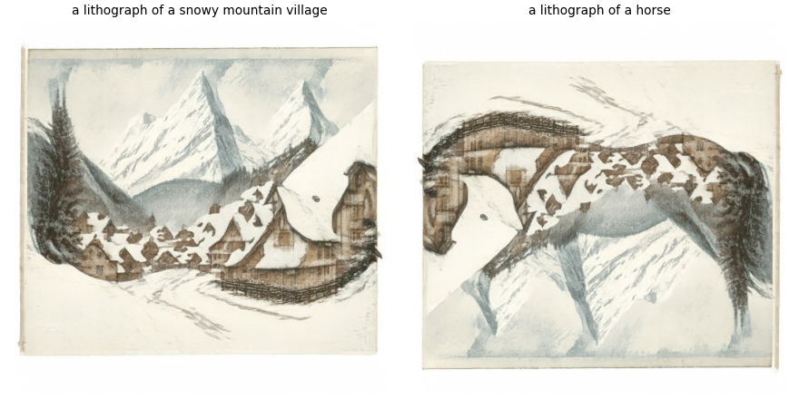
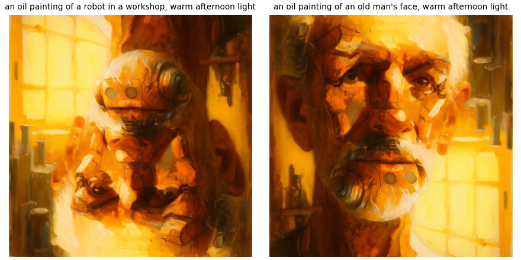
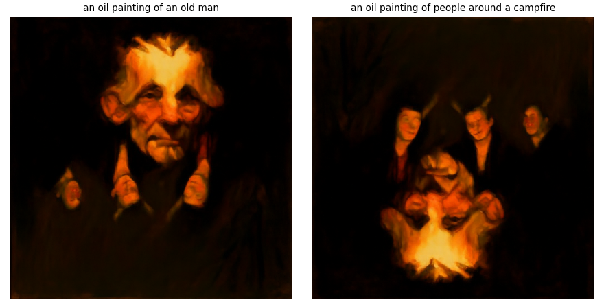
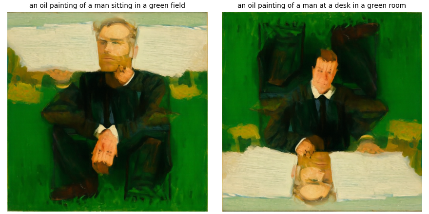
3.4Hybrid images
Same idea as the hybrid images from project 2, the far away prompt controls the low frequencies and the close up prompt controls the high frequencies. The difference is that it happens during generation, so the model can make the two fit together instead of just overlaying two finished images.
I think the cat image turned out pretty well, because if you really squint your eyes, it does kind of look like a human face, so I was happy with that one. The bear one could have turned out better. I think it shows a pretty clear failure case, where the two prompts get merged into one image, a tree shaped bear, rather than being two separate images in one. I also kept the two example pairs from the spec.
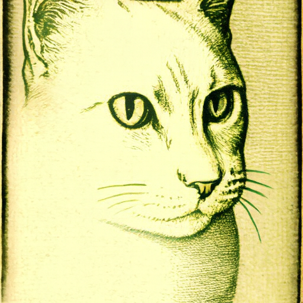
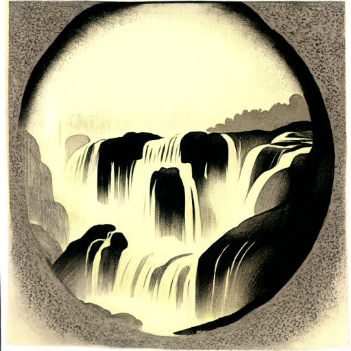
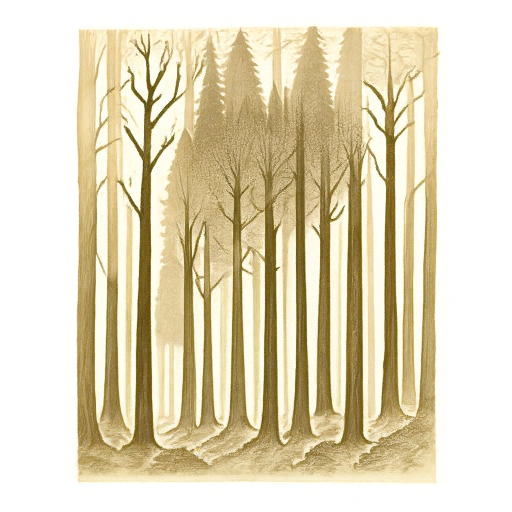
B&WBells & whistles (CS280A)
This is something that took me a number of iterations to do. Implementing the transforms from the Visual Anagrams paper was somewhat straightforward: a jigsaw that swaps the corners, and a spin of just the inner circle. I think the jigsaw swap and the circular spin look quite good, and I'm really happy with how they look in the animations. But I tried a number of prompts, and it definitely takes some iteration. My first tries with flat cartoon prompts did not read very well. So I kind of had to take some advice from the paper and stick to oil paintings with faces and animals, because the model was much stronger at generating those. I really like both the bear / tree and the cat / computer examples. They read quite well in both views. I think the spinning face, the old man crying that spins into a young man smiling, sort of works. The model was better at generating the smiling figure, and the crying figure is still fairly distorted. I tried a number of iterations there and couldn't get something amazing, but I think it still works.
As for the course logo, that took some trial and error. Generating it from scratch did not work well at all. We kind of forget with all the models we have these days, but a small diffusion model cannot spell. So I had to start from a base image with a simple script CS180 on a yellow circle, then tried a number of styles at t = 0.15. I think pixel art ended up the most coherent, but knitted also looks pretty good. I think this sort of texture application is nearing the edge of what these smaller diffusion models can do, but I'm happy with how it turned out. With these simple styles, we can start with more of the original image and still get a coherent, nicely edited image at the end.
def jigsaw(x):
return torch.roll(x, (256, 256), dims=(-2, -1))def spin_center(x):
return center_mask * rotate180(x) + (1 - center_mask) * xmore anagrams
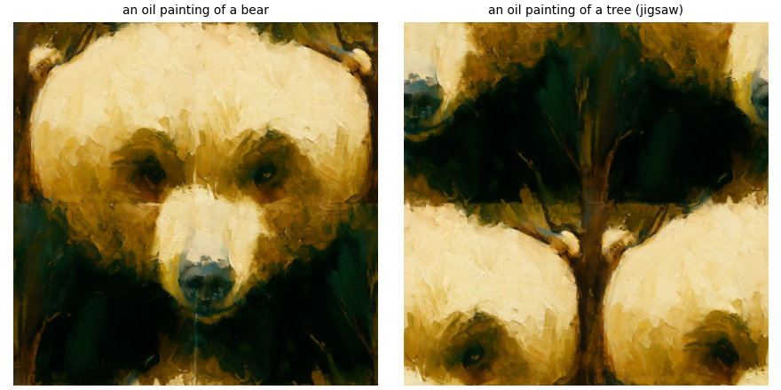
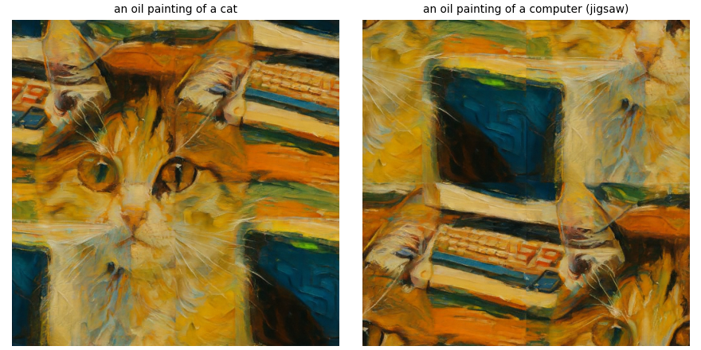
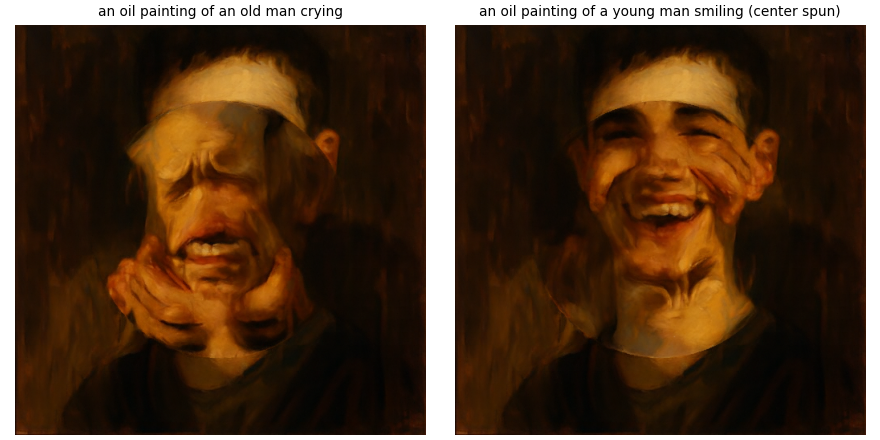
logo
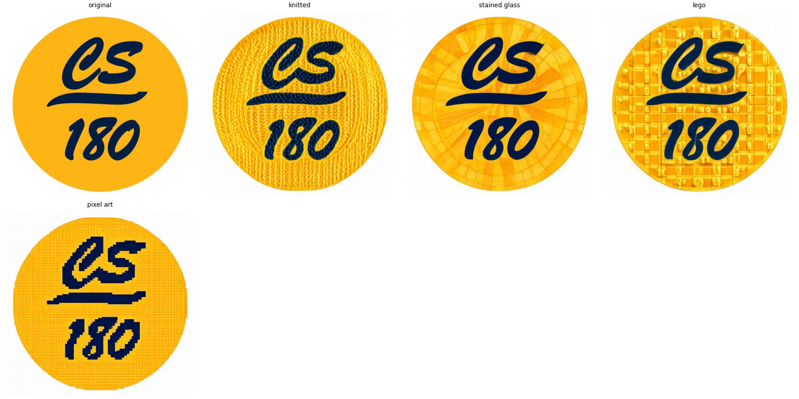
part b
B1.1Implementing the UNet
The UNet shrinks the image down to a single pixel and back up, with skip connections at each size so the fine detail does not have to squeeze through the middle.
B1.2Training a single-step denoiser
The digit gets harder to read as sigma goes up. After training at sigma = 0.5, the outputs are a little blurry after 1 epoch and sharp after 5, and the loss drops quickly before flattening out.
On noise levels it was not trained on, it does fine up to about 0.6. At 0.8 and 1.0 it starts adding strokes that are not in the digit, since it never saw that much noise.
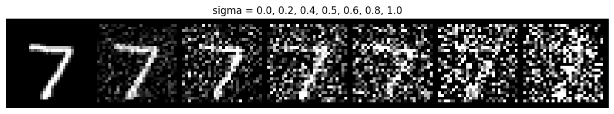
training
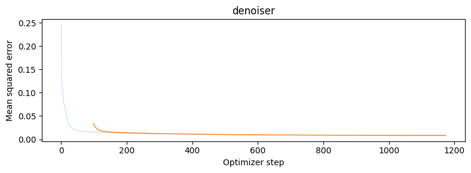
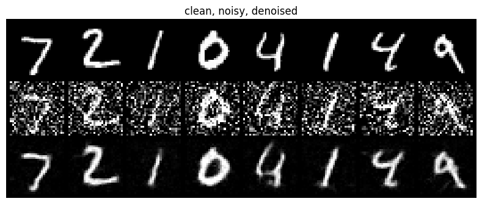
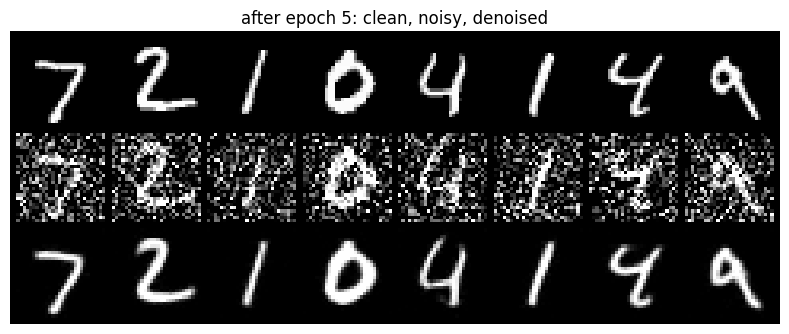
ood
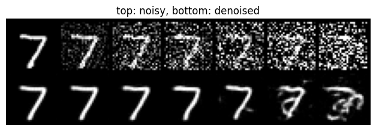
B1.2.3Denoising pure noise
When the input is pure noise, every output is the same blurry blob that looks like an average of all the digits. With MSE loss, the best guess when you have no information is the average of every possible answer, and pure noise tells the model nothing about which digit it should be. The loss also flattens out almost right away, since there is nothing else for it to learn.
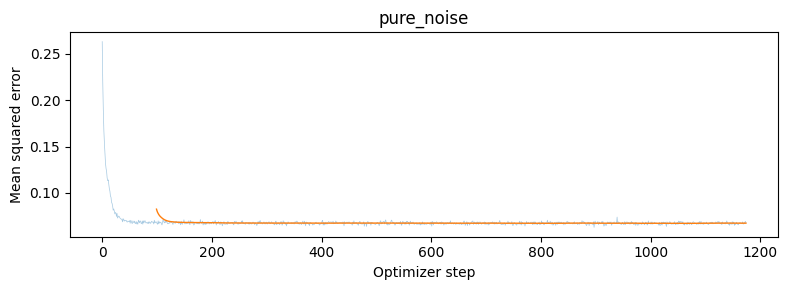
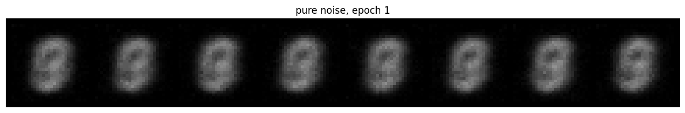
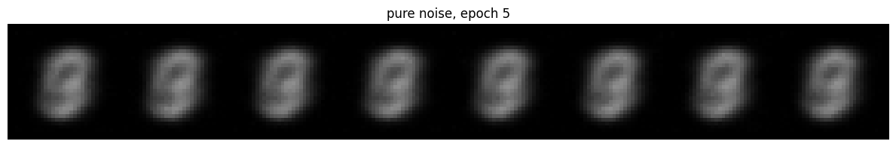
B2.1-2.3Time-conditioned flow matching
Giving the UNet the time t lets it know how noisy its input is, and turns it into a model that can generate digits from scratch. After 1 epoch the samples are scribbles, and after 10 most are readable digits, but a few still do not look like anything.
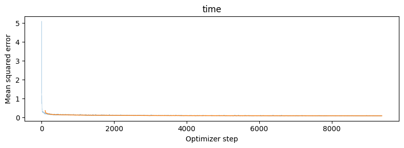
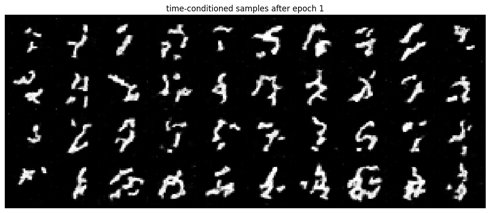
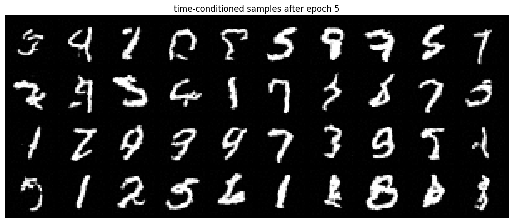
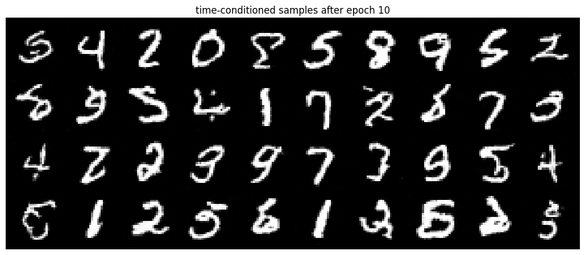
B2.4-2.6Class-conditioned flow matching
Adding the digit label lets me choose what to generate. Dropping the label 10% of the time during training means the same model can also generate without one, which is what CFG needs. After 10 epochs every column is clearly the digit it was asked for, a big jump over the time only model.
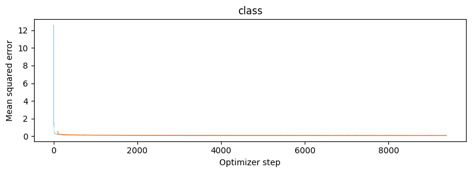
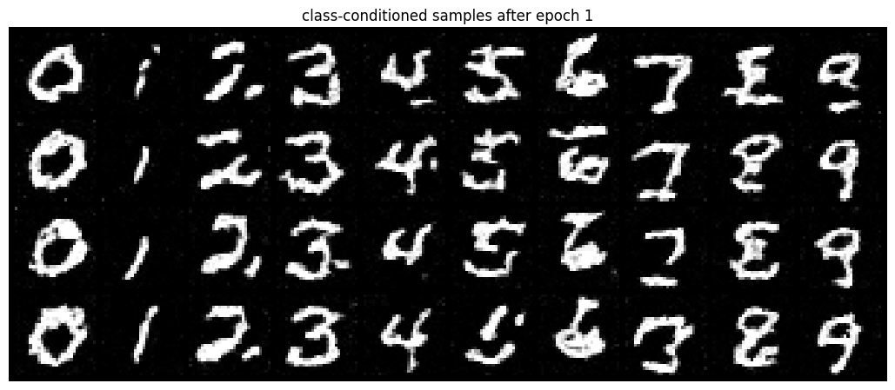
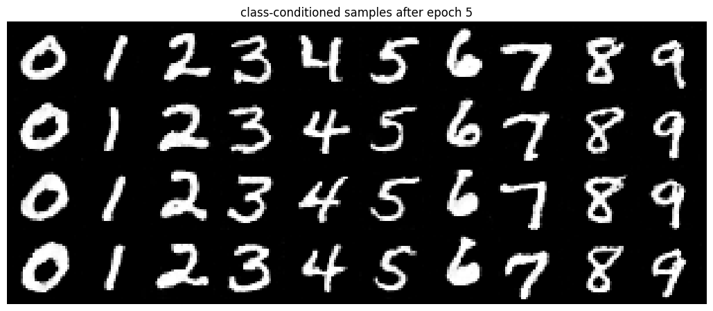
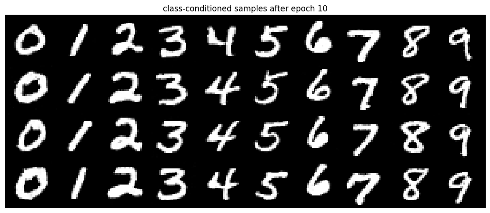
no scheduler
Without the scheduler I used a constant learning rate of 1e-3, which is where the scheduler ends up anyway. Staying at 1e-2 would keep taking big noisy steps, and 1e-3 the whole time is steady enough to get there in the same 10 epochs. The results look just as good as the scheduled version.
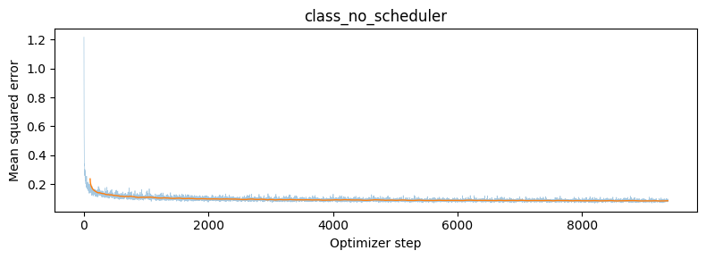
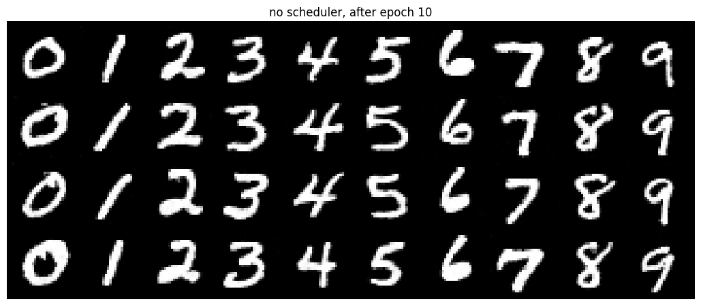
B&WBells & whistles (CS280A)
To improve the time only model, I let t shift the features as well as scale them, like the class model does. At 10 epochs this looked about the same, so that change alone did not do much. Training it for 30 epochs cleaned up most of the broken digits, so most of the improvement came from training longer.
I also trained the class model on Fashion MNIST. Every column is clearly its clothing type after 10 epochs, and at 30 epochs the shirts get printed patterns and the sandal straps are sharper.
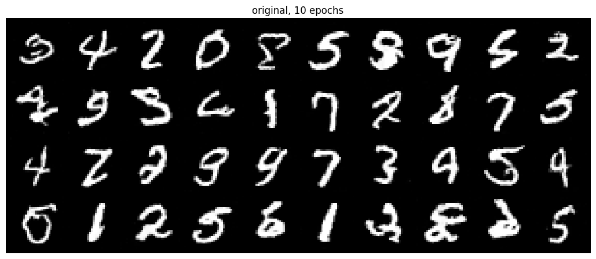
correction training
Based on Correction Training for Diffusion Models (Ahn, Wang, Efros, Park, Belhe, 2026).
def correct_time_sample(unet, correct_model, K, num_ts=50, seed=0):
unet.eval()
correct_model.eval()
torch.manual_seed(seed)
x = torch.randn(40, 1, 28, 28, device=device)
for i in range(num_ts):
t = torch.full((40,), i / num_ts, device=device)
t_image = t.reshape(-1, 1, 1, 1)
u = unet(x, t)
outputs = x + (1 - t_image) * u
for k in range(K):
outputs = correct_model(outputs, t)
u = (outputs - x) / (1 - t_image)
x = x + (1 / num_ts) * u
return xI saw this paper on Twitter. It just came out from Professor Efros's group, and since it is about getting good samples without CFG, I wanted to try it on my own flow model. The idea is to train a second UNet, the corrector, that takes the model's guess of the clean digit and learns to fix it. When sampling, at every step I guess the clean digit, run the corrector on it K times, and then take the normal Euler step toward it.
At this small scale it did not change much. With K = 2 a couple of broken digits turn into real ones, but the strokes get a little blurrier, and on the class model CFG still looks cleaner. I tried a few different variations, but I think some aspect of this is a property of scale. It is somewhat competitive with CFG, but there are still areas where it does not match up. Unfortunately, due to time constraints, I couldn't try this on other datasets, but I'd be interested to see how it goes.
fashion mnist (extra)
EndThe most important thing I learned
In a general sense, I understood how you take a large mass of images and train on some error function of how well you mimic each one. But it was always confusing to me why the model doesn't just learn the average of the entire dataset. I think to a certain extent it technically does, and then it's able to differentiate from there. I have tried to do some work in image generation before, and class conditioning was always very confusing to me. Implementing CFG helped a lot. The model learns both with and without the label, and CFG pushes the guess away from the average of every digit and toward the one I asked for. But trying to get similar results to CFG without using it, with the corrector, also taught me a lot about how these models internally represent things, and where their weaknesses lie. Part of what correction training showed me is that the blurry average is the weak spot. CFG and the corrector are both ways of pushing the guess away from it, and on MNIST, CFG just did it better.